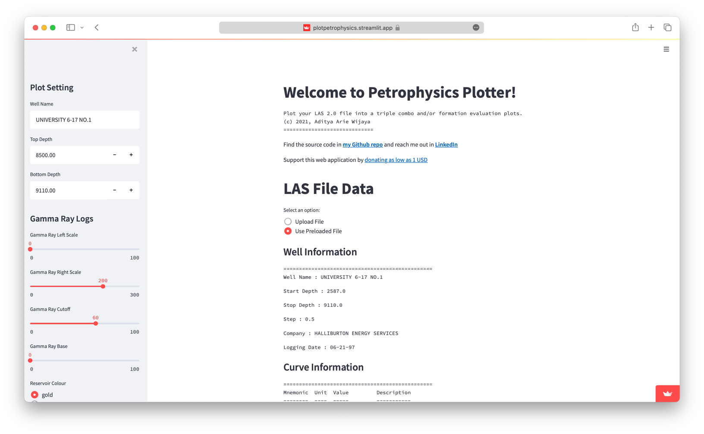
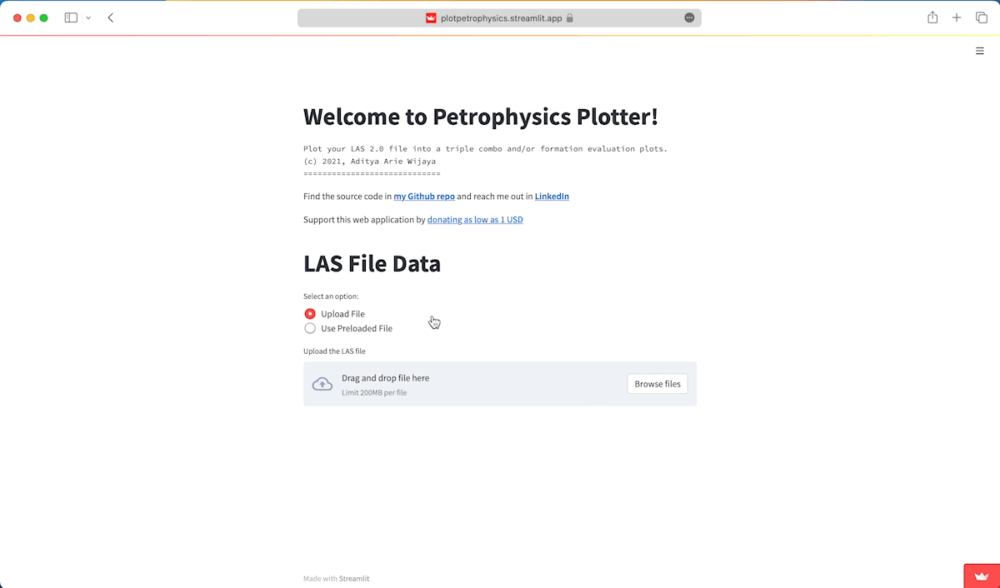
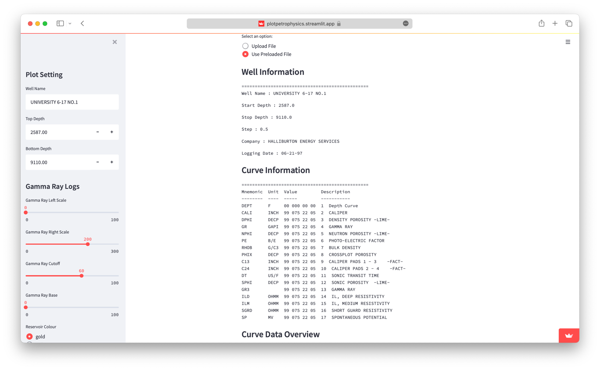
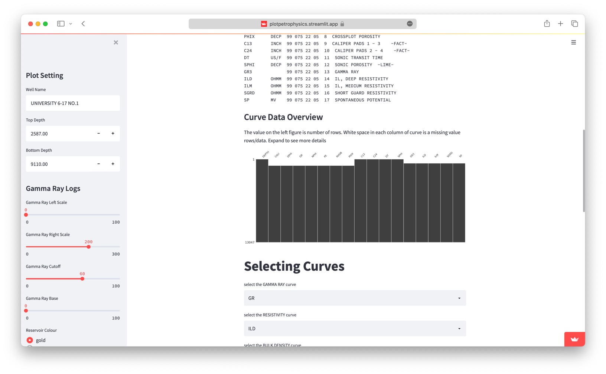
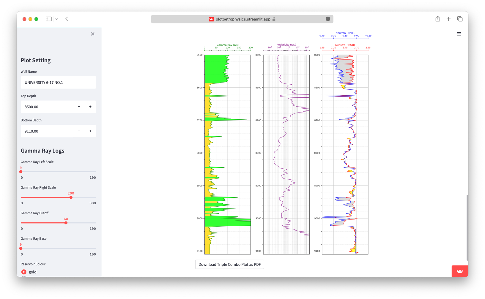
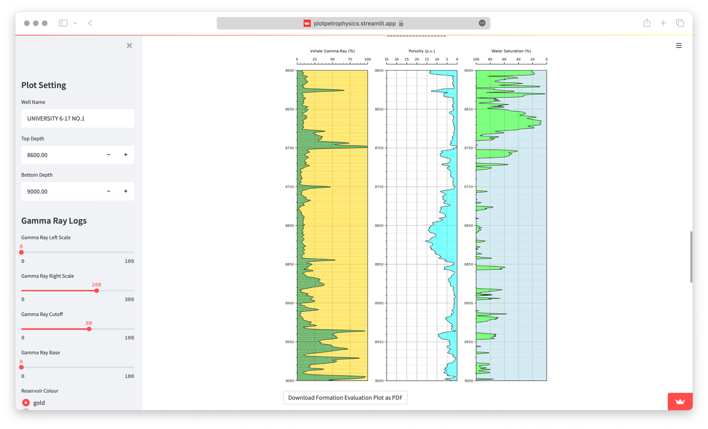

Web App for Geoscience

This app was built to answer the need for a quicklook petrophysical analysis for well-log data. So far, author found no web application that was available for FREE to students and enthusiast-alike.
Like of the website can be found here plotpetrophysics
Features are as follows:
Upload Your Own/ Use Pre-loaded Data
If you don’t have any other dataset to play with, you can use the preloaded file to see what the app can offer. Otherwise, feel free to load your own LAS file data to it (just make sure it is LAS 2.0).

Displays Well Information
Information about the well, like a well-name, the top and bottom depth, company, etc. can be displayed.

See Missing Data
All the curves available in the data will be displayed as a bar chart from top to bottom of the log (scaled by number of rows depending on the depth step), any missing data would be displayed here as shorter than others.

Plots Well Log data in Triple Combo Format
 The plot can be adjusted based on depths, scales, number of grids, and the shadings between curves (plot settings on the left)
Plots in Formation Evaluation Format
One can also turned-on Formaton Evaluation mode and then displayed as shale volume, bulk volume of water, and water saturation as follows.

And Many More…
You can download all plot as PDF files
You can download final result as CSV
There is histogram view of a curve
There is a scatter-plot view of the curves
Citation
@online{arie wijaya2023,
author = {Arie Wijaya, Aditya},
title = {Plotpetrophysics},
date = {2023-07-15},
url = {https://adtarie.net/posts/20230715-plotpetrophysics},
langid = {en}
}